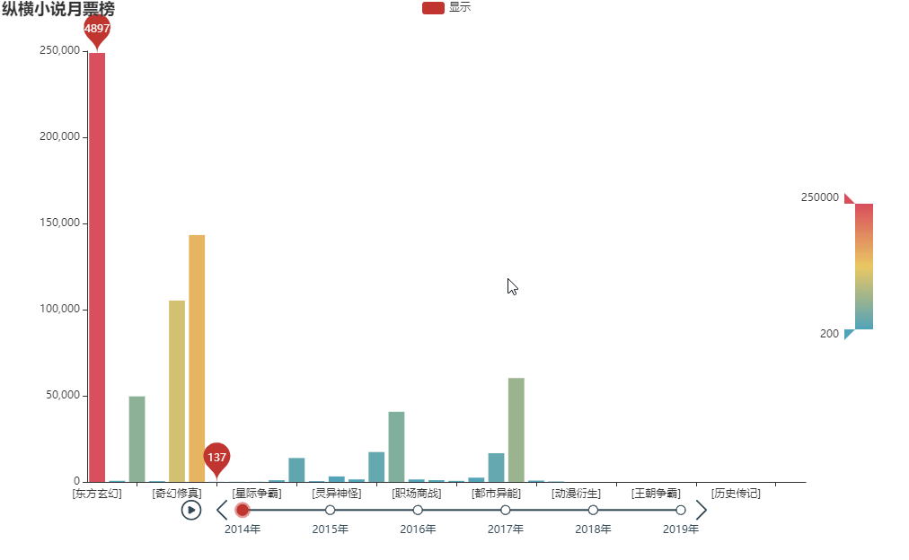
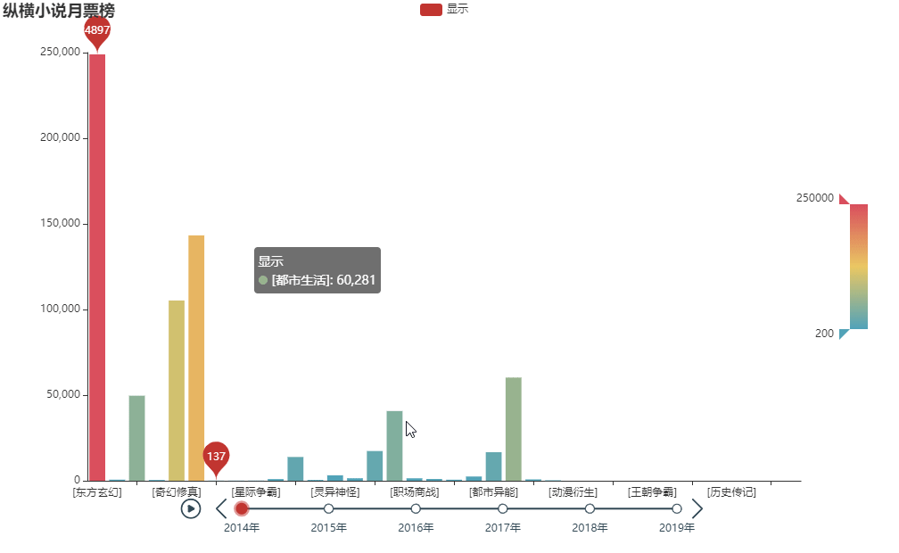
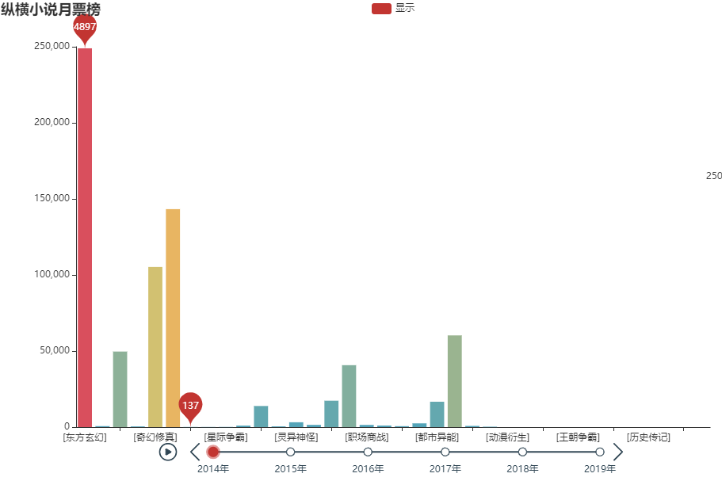
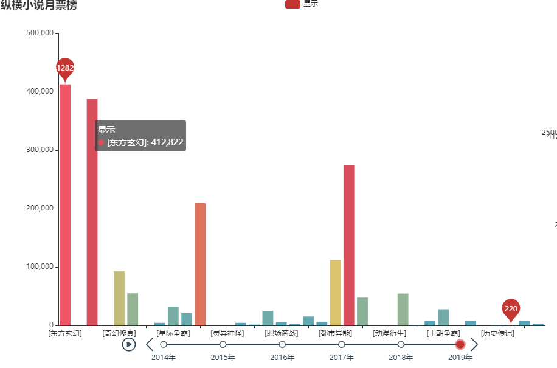
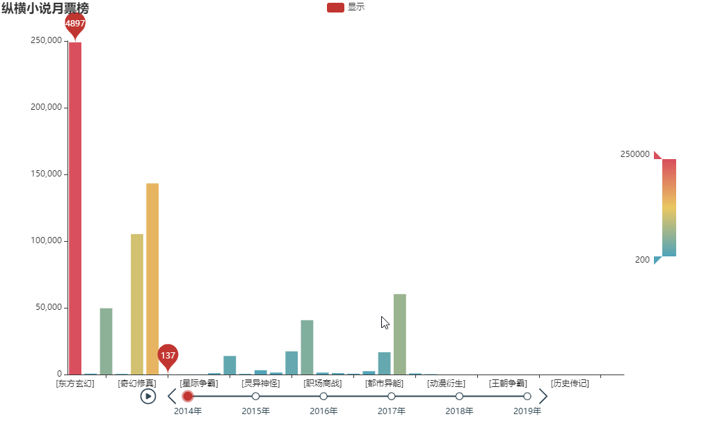

随着时代进步发展，互联网的高新产业生产、人工智能的科技实现、5G的入世，每个行业都经历着翻天覆地的变化，身处在汹涌波涛下的我们这些职薪青年一不小心就有可能被吞没，但有那么个行业，发展至今20余年，不但没有沉落，反而越发的受欢迎，那便是网络小说行业。
网络小说即小说附着在网络，凭借着互联网的联通性以及互动性，小说这类精神粮食往往更容易寻到归处，小说的种类多，受众多，收益高（详情看我另一篇文章），但门槛不高，不要求你有高学历、丰富的经验，只要你内心中有个庞大的世界想要抒发出来，并且付诸行动将其书写在现世，那你便能入了小说家这行当。
大众的口味是多样的，有的喜欢玄幻类小说，有的喜欢言情类小说等等等等，但是，大众的口味又是相似的，总有一群人有着相似的口味，喜欢看同一类小说，而且数量还不小，那么，如何能够很好的抓住更多用户的心理，写出受欢迎的小说，就看看笔者做的可视化图。
该图数据是从纵横小说网中获得，有着从2014年到2019年不同类别小说的月票总数分布，月票是用户花费金钱所换得的，所以月票数的高低从一定程度上也能体现一部小说、一个类别的受欢迎程度。
用户可以通过将鼠标悬浮在柱状图上获取详细信息，以及通过鼠标的滑轮键滑动来控制图的缩放。

也可以通过点击下面的时间轴切换不同年份以查看不同分类小说的受欢迎程度。

我们可以从这份可视化图中得知小说行业如今的内容发展趋势，什么类别主沉浮，什么类别后来居上。
看两个时间点，2014年和2019年。

如图，2014年玄幻类小说可谓是鹤立鸡群，精彩的武打，刺激的情节，炫酷的战姿，宏大的世界看来是那代人心中的幻念，而排在第二名、第三名、第四名的也是与玄幻相似的类别小说：异世大陆、奇幻修真、古典仙侠。可见那代人对奇幻、神奇世界的追求之高，每个人心中都有当一个盖世武侠的梦想！

再看2019年，让人惊奇的是，居然有其他类别的小说追赶而上，而且隐隐有超过之意，排在第一第二的分别是东方玄幻和古典仙侠，可见玄幻类小说在网络小说界中有着如同霸主一般的地位，常年居高不下，我们看看第三名，为都市生活，其实用户在点击不同年份的变化时就能发现，都市生活类。

而排在第四名的是架空历史类小说，它是在2018年突然发力，一举冲在前五，2018年前都一直是处于较低位置。
笔者为各位分析了不同年，不同类别的小说发展趋势，我们可以根据这个可视化表发现哪些小说类别一直以来都是最受欢迎，哪些小说在近些年又犹异军突起，后来居上。希望这份可视化图能为那些想要进入小说界的人一个参考，写出受欢迎的小说。